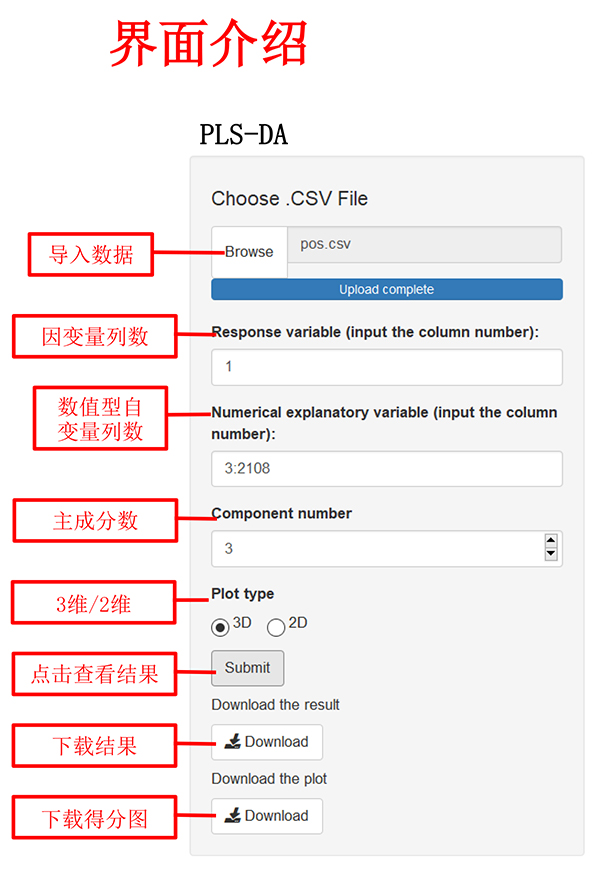
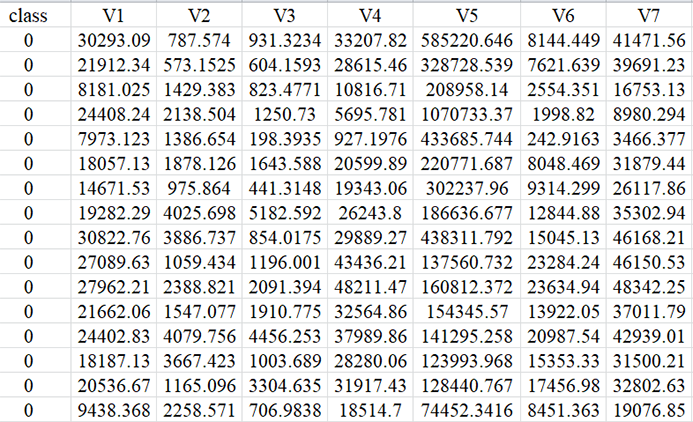
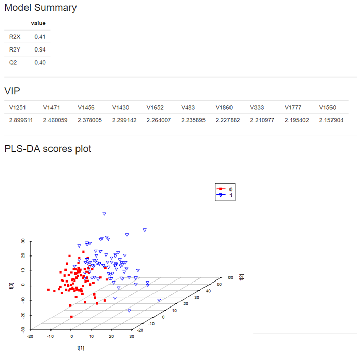

| 一、偏最小二乘判别分析简介 | |
| 偏最小二乘判别分析（PLS-DA）与主成分分析不同，是一种有监督的学习方法，即在建模时用到分组标签的信息。在建立PLS-DA模型时，需要事先指定用于建模的主成分，不同的主成分数对应着不同的PLS-DA模型，一般按照一定的准则选取前面几个主成分建立PLS-DA模型。基于所建立的PLS-DA模型，可计算衡量对模型贡献大小的VIP值。近年来，PLS-DA方法在代谢组学研究中得到了广泛的应用，并成为一种标准的高维数据分析方法。代谢组学中常利用VIP值进行变量筛选，如VIP>1。 |  |
| 二、数据格式 | |
|  | |
| 注： 1、数据格式为“.csv”，数据中避免中文、空格或特殊字符 2、数据变量名必须为英文、阿拉伯数字或下划线的组合 3、自变量列数可以输入多列，以英文状态下的逗号或冒号分隔，如:2,3,4或2:4 4、因变量必须为二分类变量 5、导入数据后，各变量所对应的列数可在输出界面显示和查询 |
|
| 三、输出结果展示 | |
| 输出结果包括模型的R2X、R2Y、Q2、VIP值和PLS-DA得分图。下载表格中，提供所有自变量的VIP值。 示例如下： |
|
|  |